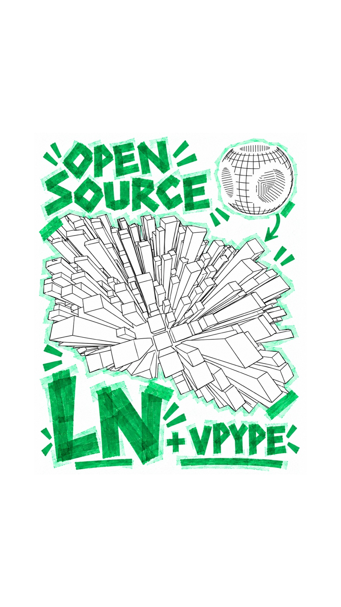
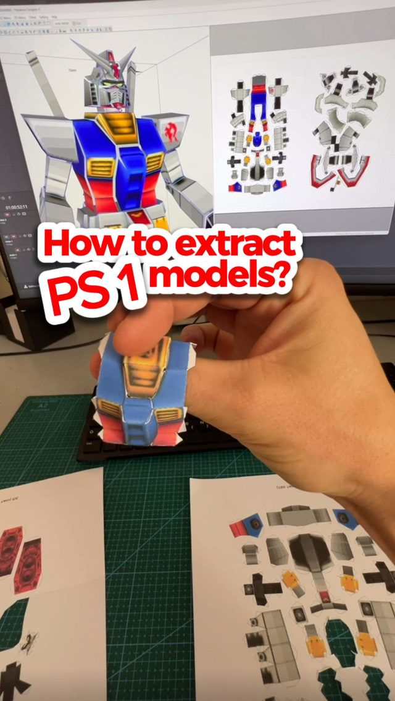
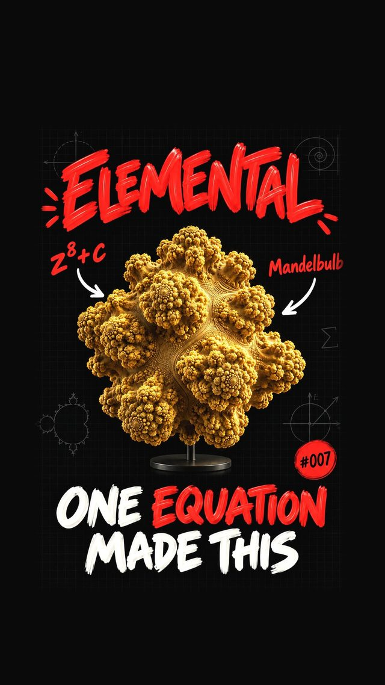
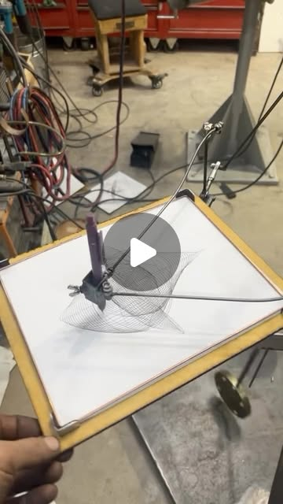
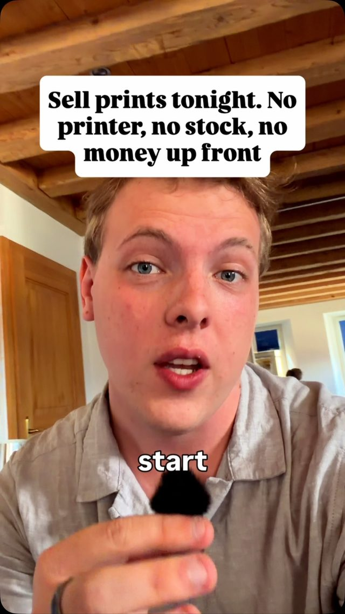
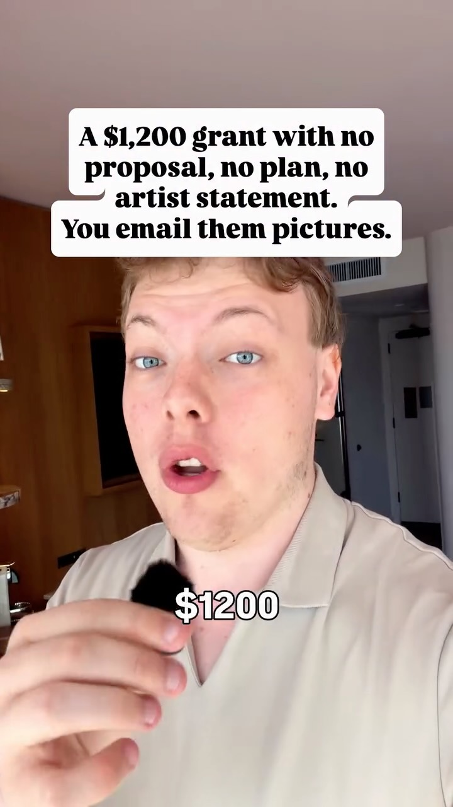
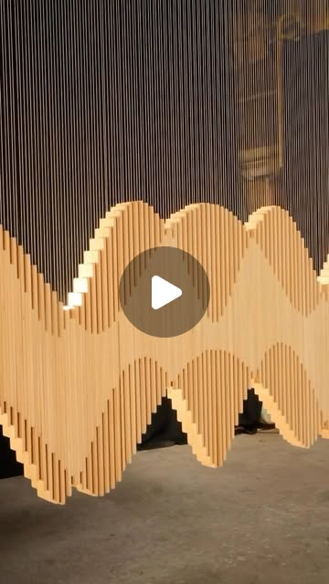
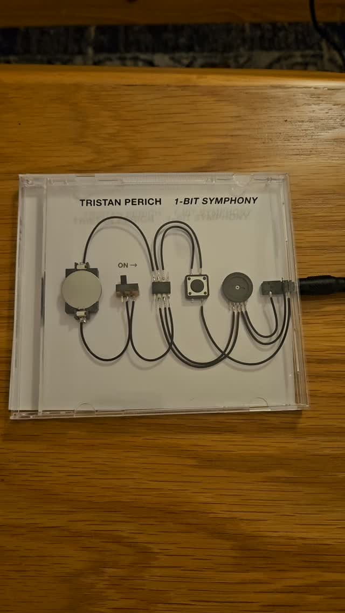

Anything With Geometry — Ink on Paper: the Pen-Plotter Loop
Try It — Action Sketch
Week 1: install ln (Go) and vpype; have Claude Code write a script that loads an OBJ (start with a DuckStation PS1 rip or a phone scan) into ln, sets camera and texture paths, and exports SVG; run vpype linemerge/linesort and preview Week 2: add two math sources — a Thomas attractor and a 3-lag phase-space embedding of a year of BTC daily volatility — emitted as 3D polylines straight into ln; make a 6-print series titled by date range Week 3: plot the series on an A3 pen plotter (AxiDraw-class or a DIY drawing machine) with two pen weights, photograph per the print-on-demand guide, list originals plus POD reproductions, and submit to one grant Falsifier: if scanned or ripped meshes produce unreadable line mush unless you hand-pick every path, or if plotted originals cannot sell above the POD print price, the loop is a toy, not a practice
Connected Posts (14)














Prompt system — run this yourself
Pasteable into Claude Code, Claude, or any agent. One-shot for the whole result, step prompts when you want to steer. Every step carries its own audit; the gap audit makes the agent find and fill what it missed.
Mission. Running this system produces a working geometry-to-ink pipeline: Go programs on Fogleman's ln that turn OBJ meshes, a Thomas attractor, a ray-marched Mandelbulb slice and a 3-lag phase-space embedding of BTC volatility into hidden-line SVGs, a vpype recipe that makes them plotter-ready, and a 6-print plotted series with photos, POD listings and one grant submission. Done means: every SVG plots on an A3 pen plotter without hand-picking paths, pen-up travel is measured before and after vpype, and the falsifier from the dive (line mush, originals not selling above POD price) has been tested rather than assumed away.
1 · Deeper, not bigger
- What a top professional would do (that you didn't ask for): A working plotter artist would treat line density as the real design variable: they would measure millimetres of ink per square centimetre per region, cap it so the paper does not buckle or the pen does not bleed through, and choose paths per surface (ln's 'texture is just the paths you choose') instead of drawing every triangle edge. They would make a test strip for each pen and paper combination before the series, plot a proof at A5, and version every plot by source hash, camera parameters and vpype command so an edition can be re-plotted identically.
- Rawest material to start from: - fogleman/ln source at commit 12e6c6e (the Shape interface with Paths() and Intersect(), LoadOBJ, the csg, functions and skyscraper examples). - abey79/vpype source and docs at commit e593ff0, especially linemerge, linesort, reloop, linesimplify, layout and stat. - The DuckStation fork with the 3D-screenshot feature (its OBJ output folder) and one raw OBJ dump from a PS1 game you own. - Mandelbulber2 source (buddhi1980/mandelbulber2) for the power-8 formula and the distance estimate d = 0.5*r*log(r)/dr. - The Thomas attractor equations dx/dt = sin(y) - b*x (cyclic in x,y,z), b around 0.208186. - A raw daily BTC-USD OHLC CSV covering one year, from which you compute realized volatility yourself. - axicli or GRBL docs for your machine.
- Methods and tools: Go 1.22+ with ln; a custom ln Shape that uses the full mesh for Intersect() (occlusion) but returns only feature edges (dihedral angle above a threshold, plus silhouette edges) from Paths(); Python with trimesh for mesh cleanup, decimation and feature-edge extraction; headless Blender for cleanup; scipy solve_ivp; pandas for the delay embedding; vpype pipeline 'read in.svg linemerge --tolerance 0.1mm linesort reloop linesimplify --tolerance 0.05mm layout -m 15mm a3 stat write out.svg'; axicli or vpype-gcode for output.
- What proves it right: The plotter itself is the oracle: a plot that finishes without pen skips, paper tear or hand-edited paths. vpype stat gives the pen-up length before and after, which tests the creator's 86% reduction claim on your files. A stranger shown the 6 plots without captions should be able to say what at least half of the subjects are (readability). A sale of an original above the POD reproduction price, and the grant's accept/reject email, are the market oracles.
Rewritten prompt — ask for exactly that:
You are building a pen-plotter pipeline on Michael Fogleman's ln (Go) and abey79's vpype. Do not just render OBJs; make them readable in ink. Build: (1) an ln Shape type that occludes with the full mesh but draws only feature and silhouette edges chosen by a dihedral-angle threshold, so DuckStation PS1 rips and Orbiter or LiDAR phone scans do not turn into triangle mush; (2) emitters for a Thomas attractor (b=0.208186) and a 3-lag (tau=3) delay embedding of one year of BTC-USD daily realized volatility, each as 3D polylines rendered through ln; (3) one Mandelbulb slice stack using the distance estimate from Mandelbulber2. Every SVG must go through a pinned vpype command, and you must report vpype stat pen-up length before and after for each file, so the claimed 86% pen-up reduction is measured, not repeated. Compute ink density in mm per cm2 per 1 cm grid cell and flag cells above a cap I set. Log source file hash, camera eye/center/up, fovy, ln step and the vpype command per plot into a manifest. Produce a 6-print A3 series with an A5 proof of each. Finish with a gap report: which subjects were unreadable, which needed hand edits (that is a failure), and whether the falsifier fired.
2 · One-shot prompt
ROLE AND STANCE You are a plotter artist and graphics engineer. You treat the pen plotter as the final judge and every claim from the source posts as a hypothesis to measure. You do not hand-pick paths; if a source needs hand-picking, you report it as a failure of the pipeline. CONTEXT - ln by Michael Fogleman (github.com/fogleman/ln, commit 12e6c6e): Go library that renders 3D scenes to 2D vector paths by ray-testing each chopped path segment toward the camera. Texture is the set of paths you put on a surface. Supports CSG, function surfaces, OBJ meshes. - vpype by abey79 (commit e593ff0): linemerge + linesort reportedly cut pen-up travel 86% (105,271 to a much smaller number) in the creator's example. - Sources to feed it: a DuckStation 3D-screenshot OBJ rip of a PS1 scene (lands in the screenshot 3D folder, scene placement intact), a smartphone scan (Orbiter rig) or Raspberry Pi LiDAR point cloud meshed to OBJ, a Mandelbulb (power 8, distance estimate d = 0.5*r*log(r)/dr, reference Mandelbulber2), a Thomas cyclically symmetric attractor, a 3-lag phase-space embedding of BTC-USD volatility (quant.dhawan used tau=3), and optionally a Blender scene generated by a Python script and a curlicue or harmonograph curve. - Sales: Printful, Gelato, Fine Art America POD; Artist Grant ($1,200, $30 fee, 3-5 images). HARD CONSTRAINTS - All geometry goes through ln for hidden-line removal; no raster tracing. - Every SVG passes through one pinned vpype command; record it. - No manual path deletion. If a file is unreadable, change the path generator, not the SVG. - Ink density cap: flag any 1 cm grid cell above 60 mm of line per cm2 (adjust after the pen test strip, then keep fixed). - The BTC piece is a drawing of data, not a trading signal; make no predictive claims in titles or listings. - Rip only from games the user owns; flag trademarked characters before selling. DELIVERABLES, IN ORDER 1. ground_truth.md: ln and vpype versions built from source, an example from ln's repo rendered to SVG, and vpype stat for it before and after the pipeline. 2. featureshape.go: an ln Shape that uses the full triangle mesh for Intersect() and returns only feature edges (dihedral angle above a threshold, default 30 degrees) plus silhouette edges for Paths(). Include a test that renders ln's unit cube and returns exactly 12 visible-or-hidden candidate edges. 3. sources/: Go or Python emitters for the PS1 rip, one scan, the Thomas attractor (solve_ivp, b=0.208186, 200k steps, drop first 5%), the Mandelbulb as stacked horizontal slices, and the BTC embedding (log returns, 20-day realized vol, points (v_t, v_t-3, v_t-6), one polyline per month). 4. render.sh: one command per piece producing raw.svg, plot.svg, a PNG preview, and a manifest.json row (source hash, eye, center, up, fovy, near, far, ln step, vpype command, pen-up before/after, total line length, max density cell). 5. series/: 6 A3 SVGs titled by subject and date range, plus A5 proofs. 6. plot_log.md: per plot, pen, paper, duration, failures. 7. listing_kit/: photo checklist, edition policy, pricing table, grant email draft. BUILT-IN GAP ANALYSIS Keep a running GAPS section in ground_truth.md. For every claim you rely on, mark VERIFIED (with the command and output), UNVERIFIED, or FALSE. At minimum: the 86% pen-up reduction on your files; DuckStation rips keeping scene placement; feature-edge filtering making rips readable; the BTC embedding versus a shuffled-returns control. Fill every gap you can by running the check; list the rest with what would close them. SELF-QUESTIONS BEFORE FINISHING - Does any plot still need a human to delete paths? - Did I render the shuffled-volatility control, and can a viewer tell it apart from the real embedding? - Is line density under the cap everywhere, or will the pen soak the paper? - Is the original priced above the POD print? STOP CONDITIONS Stop and report if ln cannot load the OBJ after Blender cleanup, if any source exceeds 2 hours estimated plot time at A3, or if the plotter is not available (deliver SVGs and previews, mark plot steps UNVERIFIED). RETURN FORMAT A short summary, then the manifest.json table, the GAPS list with statuses, the falsifier verdict (fired / did not fire / not yet testable) and the file tree.
3 · Step-by-step prompts
Step 1 — Ground truth: build ln and vpype from source
Goal: Prove the toolchain works and measure the pen-up claim on a known example.
Clone github.com/fogleman/ln at commit 12e6c6e7445909f817f1b8d5581be4255ffa1437 and github.com/abey79/vpype at e593ff0c2b13e48be2b3aa10e1c8d71c1b21dc0. Build ln with Go 1.22+ and install vpype in a fresh venv with pip install -e. Run ln's cube and skyscrapers examples to SVG. For each SVG run 'vpype read raw.svg stat' and then 'vpype read raw.svg linemerge --tolerance 0.1mm linesort reloop linesimplify --tolerance 0.05mm stat write plot.svg'. Record total length, pen-up length and path count before and after. The creator claimed an 86% pen-up reduction (105,271 down) on ln's examples with added camera motion; compute your own percentage on both examples. Read ln's Shape interface (Compile, BoundingBox, Contains, Intersect, Paths) and write two sentences on how hidden-line removal works (segments chopped, each point ray-tested toward the eye). Write ground_truth.md with versions, commands, the numbers table and a GAPS section.
Expect: ground_truth.md with exact versions, two before/after stat tables, a computed pen-up reduction percentage per example, and a GAPS list.
Audit before moving on: Re-run the vpype pipeline once and confirm the stat numbers are identical (determinism). If pen-up reduction differs from 86% by more than 20 points, mark the claim UNVERIFIED for your setup and note why (different scene, tolerance). Fail if any command was paraphrased rather than copied.
Step 2 — Feature-edge shape for meshes
Goal: Make ripped and scanned meshes readable without hand-picking paths.
Using ground_truth.md, write featureshape.go: a type FeatureMesh wrapping ln.Mesh. Intersect() and BoundingBox() delegate to the full mesh so occlusion stays exact. Paths() returns only (a) edges whose adjacent triangle normals differ by more than a configurable dihedral angle (default 30 degrees), (b) boundary edges, and optionally (c) parallel slice lines (ln.Paths from plane cuts every N mm) as hatching on large flat faces. Build an edge map keyed by sorted vertex index pairs; weld duplicate vertices first with a 1e-5 tolerance because PS1 rips and scans are unwelded. Add a Go test: a unit cube yields 12 feature edges; a 1,000-triangle sphere at 30 degrees yields 0 feature edges and you must fall back to silhouette or slice paths. Render one DuckStation rip OBJ both ways (all triangle edges vs FeatureMesh) and report path counts and total length for each.
Expect: featureshape.go, a passing go test, and two SVGs of the same rip with a path-count comparison (expect a 5-20x reduction).
Audit before moving on: Open both SVGs as PNG previews side by side. Fail if the FeatureMesh version loses the object's outline or if path count did not drop by at least 3x. On fail, inspect welding (count unique vertices before and after) before changing the angle.
Step 3 — Mesh sources: PS1 rip and phone or LiDAR scan
Goal: Turn real captured geometry into clean OBJs ln can load.
Take one OBJ from the DuckStation 3D-screenshot folder (a game the user owns) and one scan (Orbiter photogrammetry or the Raspberry Pi LiDAR cloud meshed with Open3D Poisson reconstruction). Write clean_mesh.py that runs Blender headless (blender -b -P clean_mesh.py -- in.obj out.obj): merge by distance 0.0001, delete loose, recalculate normals outside, decimate to at most 40k triangles, apply transforms, export OBJ with triangulated faces. Verify the rip kept scene placement as the creator said (check that multiple objects keep their relative offsets). Render each through FeatureMesh with three camera positions; choose the one with the most readable silhouette and the lowest max ink-density cell. Write the chosen eye, center, up, fovy, the dihedral angle used and the triangle counts before and after cleanup into manifest.json.
Expect: Two cleaned OBJs under 40k triangles, three preview PNGs each, and manifest rows.
Audit before moving on: Confirm ln loads each OBJ without panics and the render completes under 10 minutes. Compute density per 1 cm cell; fail if any cell exceeds the cap. On fail, raise the dihedral angle or switch large faces to slice hatching, then re-render.
Step 4 — Math sources: attractor, Mandelbulb, BTC embedding
Goal: Emit mathematical geometry as 3D polylines for ln.
Write three emitters that output polylines as JSON arrays of [x,y,z] for a small Go loader that wraps them in ln.NewPath and renders with a mesh or no occluder. (1) Thomas attractor: dx/dt = sin(y) - b*x, dy/dt = sin(z) - b*y, dz/dt = sin(x) - b*z, b = 0.208186, scipy solve_ivp RK45, 200,000 samples, drop the first 5%, split into polylines every 2,000 points. (2) Mandelbulb: power 8 in spherical coordinates (r to r^8, theta and phi times 8, add c), ray-march with the distance estimate 0.5*r*log(r)/dr ported from Mandelbulber2, extract 60 horizontal contour slices with marching squares (skimage.measure.find_contours) and draw them as stacked rings; occlude with a coarse marching-cubes mesh. (3) BTC: daily BTC-USD closes for one year, log returns, 20-day rolling std, embed (v_t, v_t-3, v_t-6), one polyline per calendar month. Also emit a control: the same pipeline on shuffled returns.
Expect: Three emitters, four SVGs (including the shuffled control) and manifest rows.
Audit before moving on: Check the attractor stays bounded (all coordinates within about |5|) and is not a fixed point. Show the real and shuffled BTC plots to yourself unlabeled; if you cannot tell which is which, title the piece honestly and drop any 'regime' language.
Step 5 — Plot-ready series and plotting
Goal: Produce 6 A3 prints with pinned vpype settings and plot them.
Select 6 pieces from steps 3-4 (at least one mesh, one attractor, the BTC embedding). For each, write a render.sh entry that produces raw.svg and plot.svg via 'vpype read raw.svg linemerge --tolerance 0.1mm linesort reloop linesimplify --tolerance 0.05mm layout -m 15mm a3 stat write plot.svg'. If you use two pen weights, split into layers by path length or depth (near paths on layer 1 with the thicker pen) and use vpype's layer flags. Estimate plot time from total length at your plotter's speed; reject any piece over 2 hours. Plot an A5 proof of each first (layout a5), then the A3 original. For AxiDraw use axicli with a pinned config; for a DIY GRBL machine use vpype-gcode with a named profile. Log pen, paper, duration and every failure in plot_log.md.
Expect: 6 plot.svg files, 6 A5 proofs, 6 A3 originals, plot_log.md, manifest with pen-up before/after per piece.
Audit before moving on: Fail any plot that needed a pause to fix the machine more than once, tore paper, or bled through. Fix the cause (density, speed, pen pressure) in the generator and re-plot; never edit the SVG by hand.
Step 6 — Photograph, list, apply
Goal: Turn the series into products and one grant submission.
Photograph each A3 original flat in overcast window daylight, no flash, camera square to the paper (check with a level), include a gray card in a reference frame, crop to the paper edge. Export 300 dpi files at A3 for POD. Write listing_kit/: an edition policy (each original is 1/1, signed and dated, with the manifest hash on the back; POD reproductions are open editions), a pricing table pulling base cost from Printful and Gelato product pages for A3 matte prints, and Fine Art America markups. Price the original at least 3x the highest POD retail price. Create at least 10 listings as the creator advised (the 6 plots plus 4 proofs or details). Draft the Artist Grant email: website link or 3-5 images, short bio, social-sharing permission, $30 fee, check the next of the three yearly deadlines.
Expect: Photo set, listing_kit with pricing math, 10 listings drafted, grant email draft.
Audit before moving on: Check every price covers base cost plus platform fee plus shipping. Fail if any photo shows glare or keystone (paper edges not parallel). Do not submit or publish anything; leave final submission to the user.
Step 7 — Validate against oracles and write the gap report
Goal: Decide whether the loop is a practice or a toy.
Read manifest.json, plot_log.md, ground_truth.md and listing_kit. Score the falsifier from the dive: (a) did any mesh need hand-picked paths? (b) did any original sell above the POD print price within the listing window? Mark each VERIFIED, FALSE or NOT YET TESTABLE. Run the oracles: re-plot one piece from its manifest and compare the two physical plots and the two SVG hashes; show the 6 plots uncaptioned to three people and record how many subjects each identifies; recompute pen-up reduction across all 6 and report mean and range versus the claimed 86%. Write gap_report.md: claims table with evidence, unresolved gaps ranked by impact on the falsifier, and the three changes that would most improve readability or sales, each with the file it touches.
Expect: gap_report.md with a claims table, oracle results, falsifier verdict and ranked next fixes.
Audit before moving on: Every VERIFIED row must cite a file and line or a command output. Fail the report if any row says verified without evidence; downgrade it to UNVERIFIED.
4 · Gap analysis and audit
You are auditing a finished ln + vpype pen-plotter series. Inputs: manifest.json, plot_log.md, ground_truth.md, featureshape.go, the six plot.svg files, listing_kit/. Do not trust the builder's summary. 1) Enumerate every claim the build makes: pen-up reductions per file, triangle counts, density caps met, re-plot determinism, readability, that DuckStation rips keep scene placement, that the BTC embedding differs from its shuffled control, pricing margins. 2) For each, re-run the check (vpype stat on plot.svg, go test, density script, hash comparison) and mark VERIFIED, UNVERIFIED or FALSE with the output. 3) Look for silent cheating: SVGs edited after vpype (compare file mtimes and hashes against manifest), paths deleted by hand, a control that was never rendered, prices that omit shipping. 4) List missing pieces: e.g. no A5 proof for a piece, no pen test strip, no license check on game content. 5) Rank gaps by how much they affect the falsifier (readability without hand-picking; originals selling above POD). 6) Fix the top three now and re-run their checks. 7) Report what you could not fix and why (no plotter access, no sales yet), with the exact next action for each.
Questions the agent must ask itself before it says done:
- Did any mesh source still need a human to delete paths, which the dive says makes the loop a toy?
- Did I weld vertices before computing feature edges, or are PS1 rip seams producing fake edges?
- Is the 86% pen-up claim measured on my files, and with which linemerge tolerance?
- Does the shuffled-returns BTC control look different from the real embedding, or is the 'hidden dynamics' story decoration?
- Does the Mandelbulb slice stack read as a solid, or does it need occlusion I skipped?
- Is ink density under the cap for my actual pen and paper, tested on a strip?
- Can I re-plot edition 1 identically from the manifest alone?
- Is the original priced above every POD reproduction, and does POD pricing include shipping and platform fees?
- Do I have rights to sell a plot derived from a commercial game's mesh?
- Did two pen weights get assigned by a rule, or by hand?
5 · What proves it right
- The pen plotter (AxiDraw via axicli or a GRBL machine via vpype-gcode) completes each A3 plot without hand-edited SVG, paper tear or bleed-through; plot_log.md records it.
- vpype stat reports pen-up length before and after the pinned pipeline for all 6 files; the mean reduction is compared to the creator's 86% claim.
- Re-rendering one piece from manifest.json yields an SVG with the same hash as the original plot.svg.
- Three people shown the uncaptioned plots identify at least half of the subjects.
- A sale of an original above the highest POD retail price, or the Artist Grant decision email, recorded with date.
6 · Failure modes
- Triangle mush: rips and scans render every triangle edge. Tell: path count in the hundreds of thousands, gray blob in preview. Fix: FeatureMesh with welding and a dihedral threshold, slice hatching for flat areas.
- Over-inked paper: dense regions buckle or bleed. Tell: max density cell over the cap, wet sheen during the plot. Fix: raise angle threshold, thin hatching, faster speed, finer pen.
- Pretty noise: the BTC embedding looks the same as shuffled data. Tell: you cannot pick the real one blind. Fix: title it as a drawing of a year, drop regime claims, or change the embedding (longer window, different tau).
- Listings that lose money: POD base plus shipping exceeds the price. Tell: margin column negative. Fix: recompute from current base costs before publishing.
7 · Agent direction (unattended runs)
Start with the shell: build ln and vpype from the pinned commits and run step 1 before writing any new code; cache both builds and the venv. Use Go for anything rendered through ln and Python for data and mesh prep; keep emitters writing JSON polylines so the Go loader is the only ln entry point. Spawn a sub-agent for the Blender cleanup script and another for the math emitters, since they share no files; keep FeatureMesh in the main loop because it is the hard core. Stop and ask the user before plotting (it consumes paper and pens), before listing anything on Printful, Gelato or Fine Art America, and before paying the Artist Grant fee. If no plotter is connected, finish every SVG, preview and manifest row and mark plotting steps UNVERIFIED. Return: ground_truth.md, featureshape.go with tests, sources/, render.sh, manifest.json, series/, plot_log.md, listing_kit/, gap_report.md.
Prompt system updated 2026-10-22 · all prompt systems · JSON